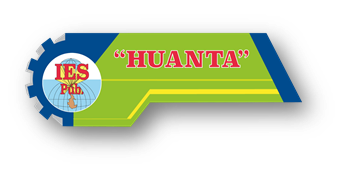

Programa de estudios
Producción Agropecuaria
Prepárate para gestionar procesos agrícolas y pecuarios sostenibles, productivos y conectados con el desarrollo local.
Solicitar información ↗
Programa de estudios
Prepárate para gestionar procesos agrícolas y pecuarios sostenibles, productivos y conectados con el desarrollo local.
Solicitar información ↗